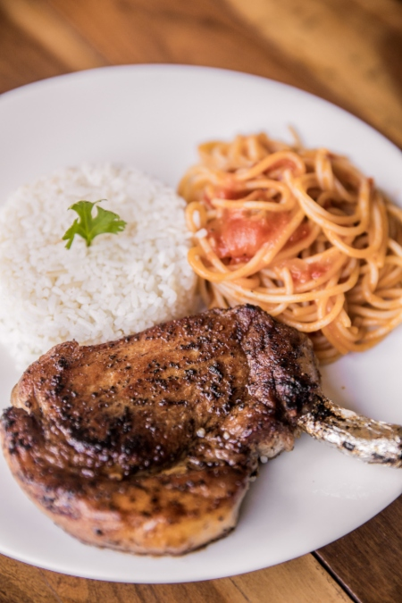
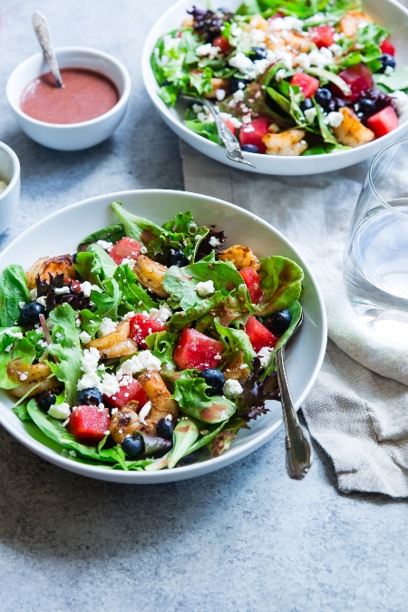
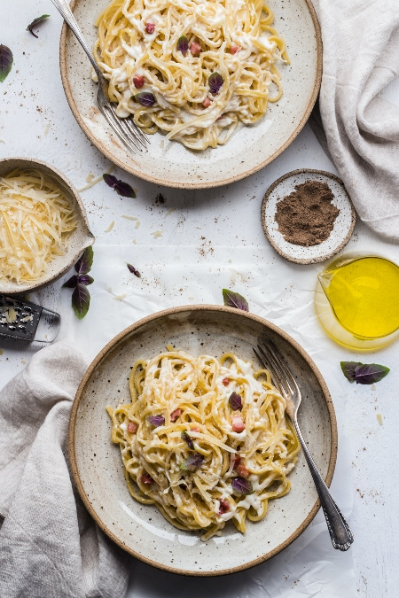

Recetas Destacadas

Carne de ternera con arroz blanco
Este plato, está cocinado con una base de Carnes y pertenece a los platos de la cocina Tradicional. Por lo general se consume durante todo el año, y se suele servir a los comensales como primer plato.

Ensalada de Tomates, Albahaca y Queso
Este plato, está cocinado con una base de Ensaladas y pertenece a los platos de la cocina Vegetariana. Por lo general se consume durante todo el año, y se suele servir a los comensales como entrante.

Fideos acompañados con salsa carbonara
Este plato, está cocinado con una base de Pastas y pertenece a los platos de la cocina Tradicional. Por lo general se consume durante todo el año, y se suele servir a los comensales como primer plato.